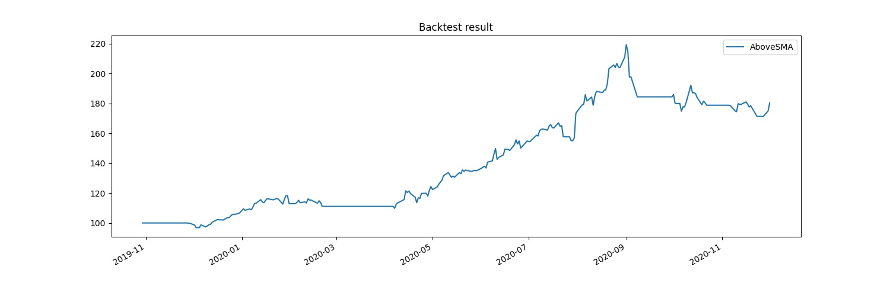
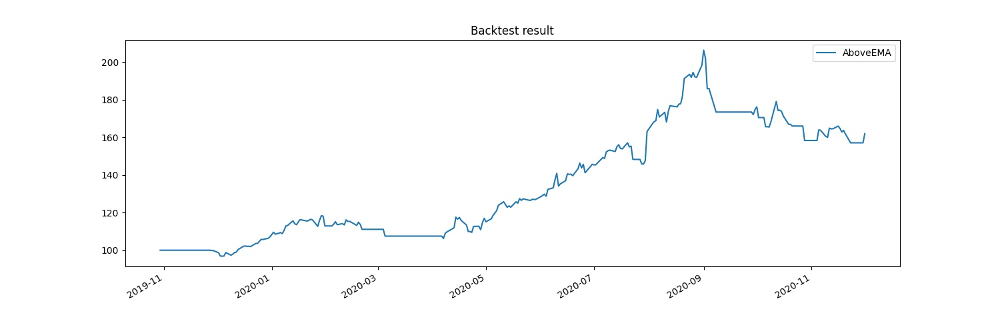
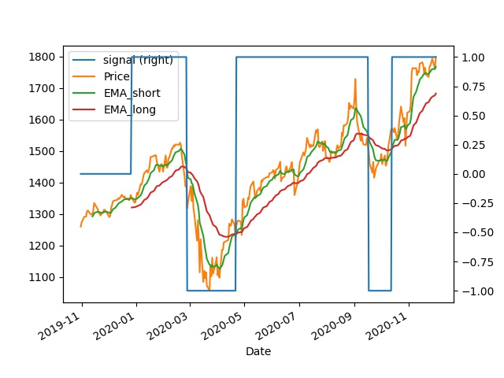
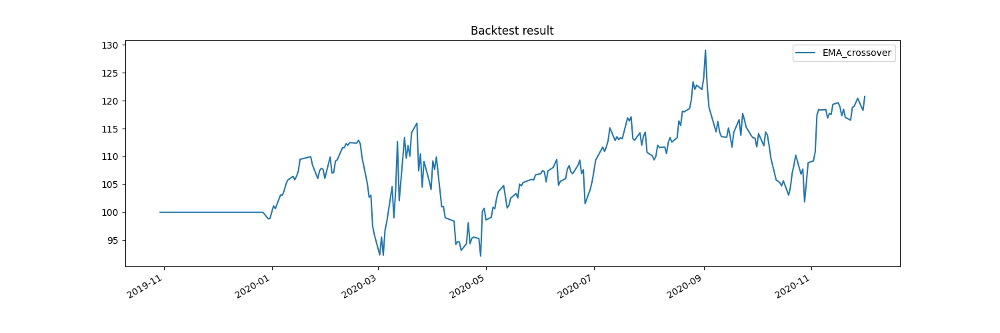
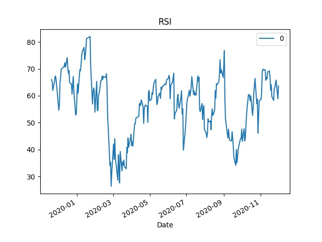
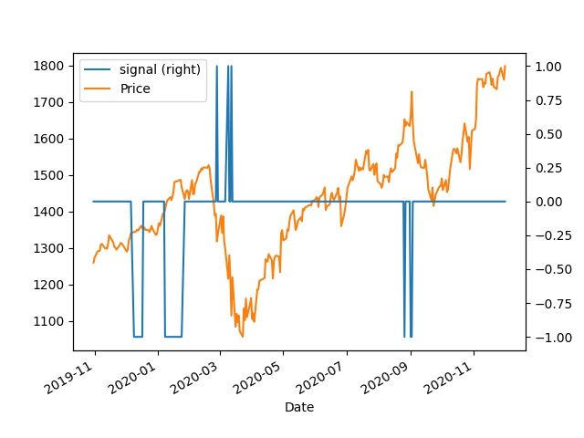
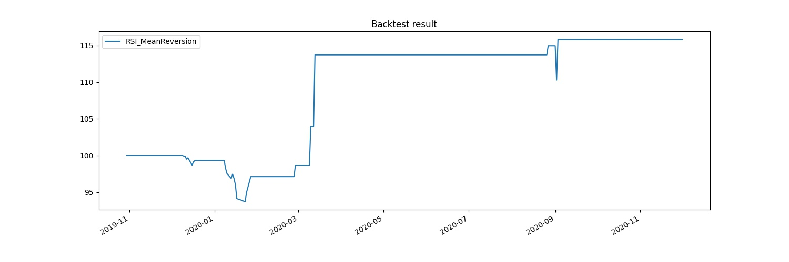
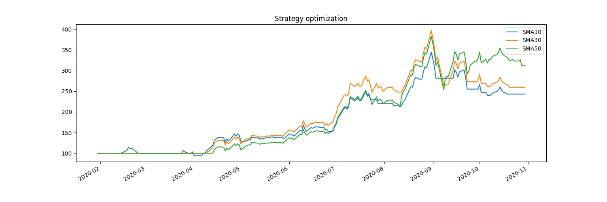
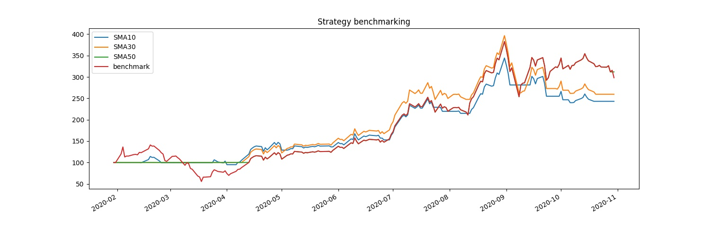

Trading Strategies#
import bt
import talib
import matplotlib.pyplot as plt
import pandas as pd
Trading Signals#
Build an SMA-based signal strategy#
It’s time to build and backtest your first signal-based strategy. Although simple, these types of strategies can be effective, and also lay the groundwork for more complex strategies consisting of additional signals and information.
Implementing a price-comparison-based signal with bt is a straightforward process. You will first download some historical price data of the stock, calculate its SMA (simple moving average), implement an SMA-based signal strategy, and then backtest it with the stock price data.
# Get the price data
price_data = bt.get('aapl', start='2019-11-1', end='2020-12-1')
# Calculate the SMA
sma = price_data.rolling(20).mean()
# Define the strategy
bt_strategy = bt.Strategy('AboveSMA',
[bt.algos.SelectWhere(price_data > sma),
bt.algos.WeighEqually(),
bt.algos.Rebalance()])
# Create the backtest and run it
bt_backtest = bt.Backtest(bt_strategy, price_data)
bt_result = bt.run(bt_backtest)
# Plot the backtest result
bt_result.plot(title='Backtest result')
plt.savefig("Data/btresultsma.jpg")

Build an EMA-based signal strategy#
Previously, you implemented an SMA-based signal strategy. However, you are wondering whether the EMA (exponential moving average) indicator is a better choice since it is more sensitive to recent price movement. You also would like to leverage the talib library to calculate the indicator. After switching to an EMA-based signal strategy, you will perform a similar backtest using the Apple stock price data.
# Calculate the EMA
ema = talib.EMA(price_data['aapl'], timeperiod=20)
# Convert to DataFrame
ema = pd.DataFrame(ema)
ema.rename(columns = {0:'aapl'}, inplace = True)
# Define the strategy
bt_strategy = bt.Strategy('AboveEMA',
[bt.algos.SelectWhere(price_data > ema),
bt.algos.WeighEqually(),
bt.algos.Rebalance()])
# Create the backtest and run it
bt_backtest = bt.Backtest(bt_strategy, price_data)
bt_result = bt.run(bt_backtest)
# Plot the backtest result
bt_result.plot(title='Backtest result')
plt.savefig("Data/btresultema.jpg")

Trend-following Startegies#
# Get the price data
price_data = bt.get('goog', start='2019-11-1', end='2020-12-1')
# Calculate the SMA
sma = price_data.rolling(20).mean()
# Calculate the indicators
EMA_short = talib.EMA(price_data['goog'],
timeperiod=10).to_frame()
EMA_long = talib.EMA(price_data['goog'],
timeperiod=40).to_frame()
# Create the signal DataFrame
signal = EMA_long.copy()
signal[EMA_long.isnull()] = 0
Construct an EMA crossover signal#
Trend-following strategies believe that “the trend is your friend,” and use signals to indicate the trend and profit by riding it.
You want to build and backtest a trend-following strategy. First, you decide to use two EMAs (exponential moving averages) to construct the signal. When the shorter-term EMA, EMA_short, is larger than the longer-term EMA, EMA_long, you will enter long positions in the market. Vice versa, when EMA_short is smaller than EMA_long, you will enter short positions.
# Construct the signal
signal[EMA_short > EMA_long] = 1
signal[EMA_short < EMA_long] = -1
# Merge the data
combined_df = bt.merge(signal, price_data, EMA_short, EMA_long)
combined_df.columns = ['signal', 'Price', 'EMA_short', 'EMA_long']
# Plot the signal, price and MAs
combined_df.plot(secondary_y=['signal'])
plt.savefig("Data/emacross.jpg")

Build and backtest a trend-following strategy#
Previously, you constructed a signal using two EMA indicators. When the shorter-term EMA is larger than the longer-term EMA, the signal is 1 for entering long positions in the market. Vice versa, when the shorter-term EMA is smaller than the longer-term EMA, the signal is -1 for entering short positions. Now you will implement a trend-following strategy with your signal and perform a backtest using the Google stock.
signal.rename(columns = {0:'goog'}, inplace = True)
# Define the strategy
bt_strategy = bt.Strategy('EMA_crossover',
[bt.algos.WeighTarget(signal),
bt.algos.Rebalance()])
# Create the backtest and run it
bt_backtest = bt.Backtest(bt_strategy, price_data)
bt_result = bt.run(bt_backtest)
# Plot the backtest result
bt_result.plot(title='Backtest result')
plt.savefig("Data/btresultemacross.jpg")

Mean Reversion Strategy#
# Get the price data
price_data = bt.get('goog', start='2019-11-1', end='2020-12-1')
# Calculate the RSI
stock_rsi = talib.RSI(price_data['goog']).to_frame()
# Create the same DataFrame structure as RSI
signal = stock_rsi.copy()
signal[stock_rsi.isnull()] = 0
Construct an RSI based signal#
It’s time to implement your first mean-reversion strategy. Mean reversion trading uses signals to detect market imbalance, and takes long positions in an oversold market and short positions in an overbought market.
First, you will use the RSI indicator to gauge market conditions and construct the signal. If the RSI value drops below 30, you will enter long positions. If the RSI value rises above 70, you will enter short positions. If the RSI value is in between 30 and 70, you will take no positions.
# Construct the signal
signal[stock_rsi > 30] = -1
signal[stock_rsi < 70] = 1
signal[(stock_rsi <= 70) & (stock_rsi >= 30)] = 0
# Plot the RSI
stock_rsi.plot()
plt.title('RSI')
plt.savefig("Data/rsi.jpg")

# Merge the data
combined_df = bt.merge(signal, price_data)
combined_df.columns = ['signal', 'Price']
combined_df.plot(secondary_y =['signal'])
plt.savefig("Data/rsisignal.jpg")

Build and backtest a mean reversion strategy#
Previously, you constructed a signal using the RSI indicator. When the RSI value drops below 30, the signal is 1 for entering long positions in the market. When the RSI value rises above 70, the signal is -1 for entering short positions. Now you will implement a mean reversion strategy with the signal and perform a backtest on trading the Google stock.
signal.rename(columns = {0:'goog'}, inplace = True)
# Define the strategy
bt_strategy = bt.Strategy('RSI_MeanReversion',
[bt.algos.WeighTarget(signal),
bt.algos.Rebalance()])
# Create the backtest and run it
bt_backtest = bt.Backtest(bt_strategy, price_data)
bt_result = bt.run(bt_backtest)
# Plot the backtest result
bt_result.plot(title='Backtest result')
plt.savefig("Data/btresultrsi.jpg")

Strategy Optimization and Benchmarking#
Conduct a strategy optimization#
You have an SMA-based signal strategy to trade stocks. However, you are not sure what lookback period to use for calculating the SMA that can optimize the strategy performance. You plan to run multiple backtests on different input parameters. Also, you want the capability to assess the strategy on trading different stocks or based on different historical periods.
def signal_strategy(ticker, period, name, start='2020-2-1', end='2020-11-1'):
# Get the data and calculate SMA
price_data = bt.get(ticker, start=start, end=end)
sma = price_data.rolling(period).mean()
# Define the signal-based trategy
bt_strategy = bt.Strategy(name,
[bt.algos.SelectWhere(price_data > sma),
bt.algos.WeighEqually(),
bt.algos.Rebalance()])
# Return the backtest
return bt.Backtest(bt_strategy, price_data)
# Create signal strategy backtest
ticker = 'tsla'
sma10 = signal_strategy(ticker, period=10, name='SMA10')
sma30 = signal_strategy(ticker, period=30, name='SMA30')
sma50 = signal_strategy(ticker, period=50, name='SMA50')
# Run all backtests and plot the resutls
bt_results = bt.run(sma10, sma30, sma50)
bt_results.plot(title='Strategy optimization')
plt.savefig("Data/optimize-sma.jpg")

Perform a strategy benchmarking#
You are wondering: instead of spending energy actively trading a stock, what if you just sit back and hold the stock for a period of time. Does your active trading strategy generate better profits than a passive buy-and-hold strategy? To answer this question, you plan to perform a benchmarking test.
def buy_and_hold(ticker, name, start='2020-2-1', end='2020-11-1'):
# Get the data
price_data = bt.get(ticker, start=start, end=end)
# Define the benchmark strategy
bt_strategy = bt.Strategy(name,
[bt.algos.RunOnce(),
bt.algos.SelectAll(),
bt.algos.WeighEqually(),
bt.algos.Rebalance()])
# Return the backtest
return bt.Backtest(bt_strategy, price_data)
# Create benchmark strategy backtest
benchmark = buy_and_hold('tsla', name='benchmark')
# Run all backtests and plot the resutls
bt_results = bt.run(sma10, sma30, sma50, benchmark)
bt_results.plot(title='Strategy benchmarking')
plt.savefig("Data/benchmark-sma.jpg")
